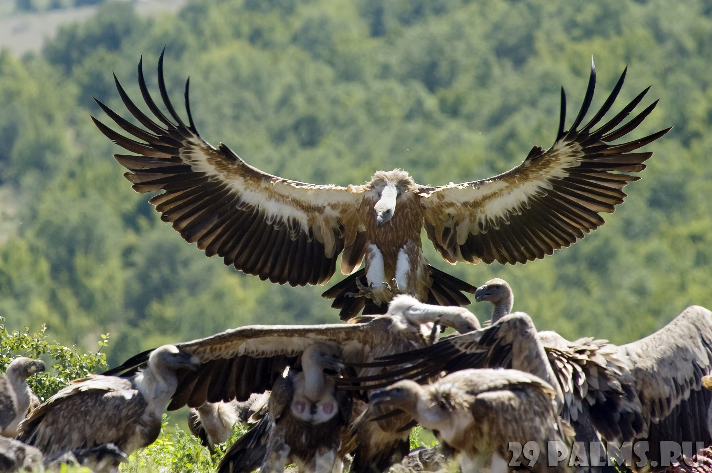
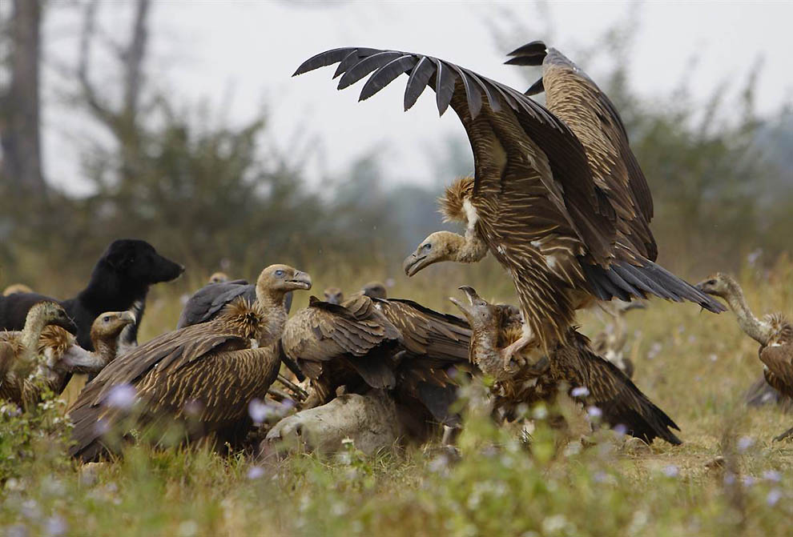
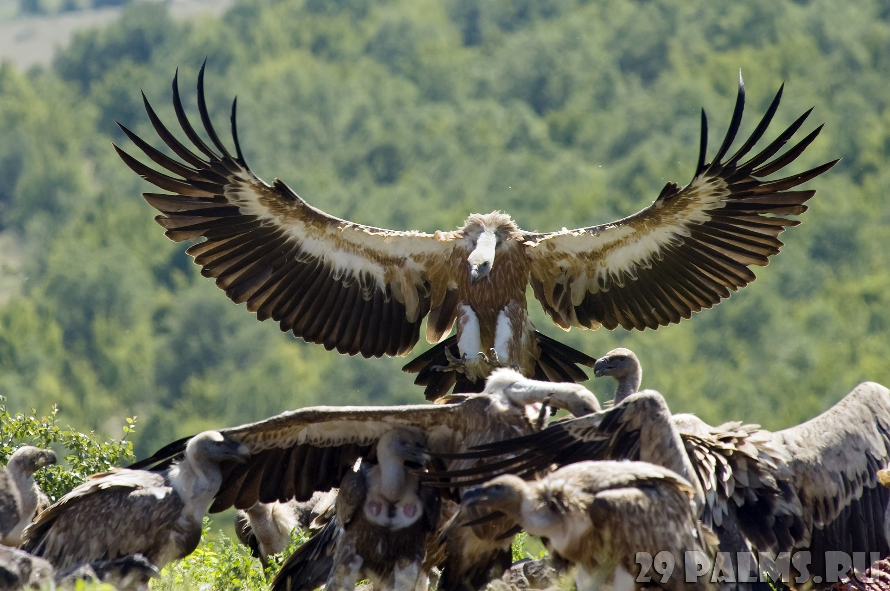
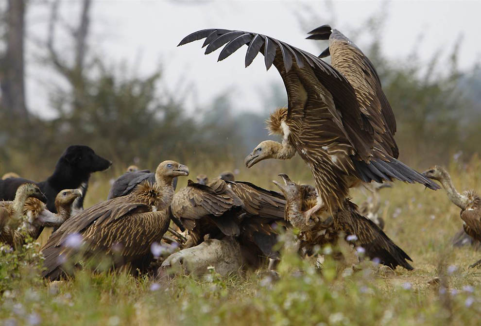

ОТРЯД СОВООБРАЗНЫЕ — STRIGIFORMES
СЕМЕЙСТВО НАСТОЯЩИЕ СОВЫ — STRIGIDAE
Широко распространенна и разнообразна группа сов. Телосложение плотнее, чем у сипух, ноги короче, лицевой диск оканчивается не ниже клюва, иногда слаборазвит. Череп более широкий, клюв короче и крепче, вилочка пневматизирована, по заднему краю грудины 2 пары вырезок. Третий палец ноги длиннее 2-го, его коготь гладкий, оборотный 4-й палец обычно направлен назад. Копчиковая железа голая, яйца округлые, почти шаровидные. Радужина темная у немногих видов, обычно же лимонная, желтая, оранжевая, красная. У молодых птиц радужина более бледная и тусклая, приобретает яркость с возрастом.
Размеры и пропорции очень различны. Мексиканский сычик-эльф (Micrathene whitneyi) имеет длину 13—14 см и массу 41 г, чуть тяжелее андский бакенбардовый сычик (Xenoglaux loweryi). Для сравнения: домовый воробей имеет среднюю длину 15 см и массу 30—40 г. А некоторые самки филина (Bubo bubo) и дальневосточного рыбного филина (Ketupa blakistoni) достигают длины 65—75 см при размахе крыльев 180—190 см и массе 4—4,2 кг. Достигающие сходных размеров самки белой совы (Nyctea scandiaca) легче — до 3 кг. Относительные размеры головы, глаз, развитость лицевого диска, соотношение длины крыльев и хвоста позволяют судить о суточной активности и предпочитаемом способе охоты.
Экологические группы настоящих сов разнообразны и не обязательно включают представителей только близких родов. Относительно некрупные или мелкие, длиннокрылые совы родов Otus, Ninox, Pseudoscops, Lophostrix, Jubula в большинстве своем являются воздушными охотниками на крупных насекомых и летучих мышей. Сходные с ними по размерам, но длиннохвостые и короткокрылые сычи, сычики и ястребиные совы (роды Glaucidium, Athene, Surnia, Uroglaux и др.) охотятся на мелких птиц и грызунов в угон и из засады, часто активны днем. Крупные африканские рыбные совы (Scotopelia) и азиатские рыбные филины (Ketupa) специализированы в охоте на рыбу, лягушек, ракообразных. Некоторые совы (Asio, Nyctea) предпочитают высматривать добычу на бреющем полете, облетая открытые и полуоткрытые пространства, другие же (Strix, Pulsatrix, Aegolius) — типичные лесные жители, настигающие добычу коротким броском с присады. Филины (Bubo) универсальны, но предпочитают объекты крупного размера, недоступные другим совам.

.jpg) 



ОТРЯД СОКОЛООБРАЗНЫЕ—FALCONIFORMES
СЕМЕЙСТВО ЯСТРЕБИНЫЕ—ACCIPITRIDAE
Типичные хищники с внешним видом орла, канюка, коршуна, ястреба, грифа, с широким диапазоном варьирования морфологических признаков и особенностей образа жизни. В обиходе практически любую хищную птицу среднего размера называют ястребом. Слово “ястреб”, несомненно, произошло от глагола “истреблять”. Размеры очень различны — коршун-крошка (Gampsonyx swainsonii) имеет длину 20-28 см, массу 80-120 г, размах крыльев 54 см, некоторые грифы и орланы достигают массы 9-12.5 кг при длине тела 90-115 см и размахе крыльев 2.5-3.1 м. Самки у всех видов, за исключением грифов, заметно крупнее самцов...
Голосовые мышцы хорошо развиты, ястребиные могут издавать разнообразные звуки, обычно высокого тембра, хорошо слышимые на большом расстоянии. Тем не менее, мембрана на нижней гортани развита слабо. Шейных позвонков 14, у грифов — 17. Грудные позвонки, как правило, не срастаются в спинную кость.
Клюв сжат с боков, конек надклювья ближе к вершине резко изогнут книзу, подклювье же прямое. Особенно длинный изогнутый крючок на клюве характерен для американских коршунов-слизнеедов (Chondrohierax, Rostramus). Таким крючком они, как изогнутым пинцетом, вытаскивают улиток из раковин. Ястребиные обычно не имеют продольного гребня на небе и предвершинных зубцов на надклювье, характерных для большинства соколов. Однако есть исключения — питающиеся насекомыми представители родов Leptodon, Henicopernis имеют по одной паре зубцов, a Aviceda, Harpagus, Ictinia — по две пары. Питающиеся падалью грифы имеют слабые, неспособные к схватыванию лапы с прямыми затупленными когтями, но клюв у них такой же крючковатый, как и у других хищников — ведь падаль тоже надо разделывать. Есть предположение, что предки ястребообразных хищников (в отличие от предков соколиных) были сначала собирателями и падальщиками, специализированными в расчленении неподвижных объектов, а способность хватать лапами живую добычу развилась у них позже. Начав использовать лапы, как главный охотничий инструмент, ястребиные “поступились” другими функциями ног — они, за немногими исключениями, неважные ходоки.